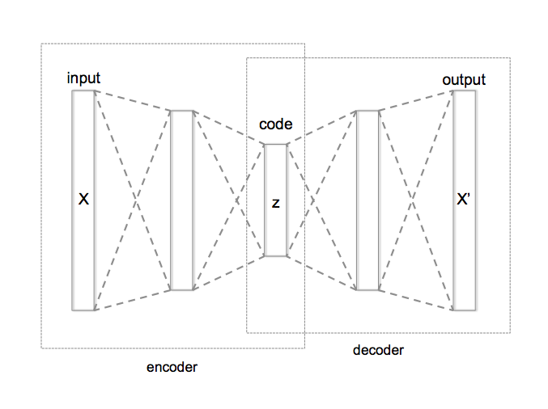
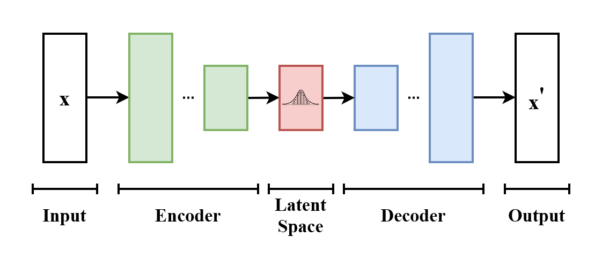
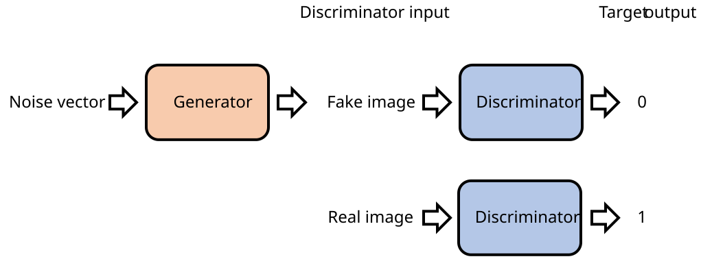
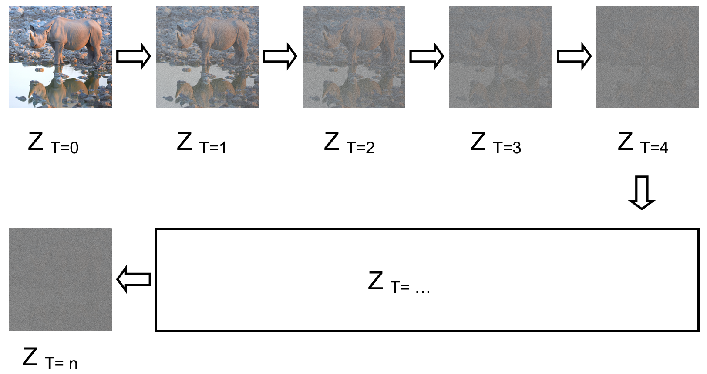

В принципе, сейчас будет ультра айтишный топик, но, думаю, вам будет интересно. Многие уже примерно понимают, как AI генерирует текст. У языка есть структура, грамматика, слова и закономерности, которые модель изучает во время Training. Причём можно даже придумать собственный язык, собрать Dataset и попробовать научить небольшую Language Model с ним работать. По-моему, это был бы ультраинтересный NLP pet project. Но сегодня я хотел бы поговорить про Image Generation.
Вот представьте, с текстом более-менее понятно. Есть последовательности токенов, определённые закономерности, и модель учится предсказывать следующие токены. А что делать с фотографиями? Как научить Neural Network понимать изображения, находить в них закономерности и, самое главное, создавать совершенно новые картинки? Для этого пришлось разрабатывать совершенно другие подходы.
Autoencoder



1980-е. Autoencoder. Ещё в 1980-х исследователи начали активно изучать Autoencoders, нейросети, которые учатся восстанавливать собственные входные данные. Идея довольно простая. Мы подаём фотографию в Neural Network, Encoder сжимает её в компактное представление с меньшей размерностью, которое называется Latent Representation. Между Encoder и Decoder находится Bottleneck, который ограничивает объём передаваемой информации и заставляет модель изучать полезные Features. Затем Decoder пытается восстановить оригинальную фотографию из этого представления. Но тут возникает вопрос: а зачем нам модель, которая просто берёт фотографию и восстанавливает её обратно? Самое интересное не в реконструкции, а в том, что во время Training нейросеть учится находить скрытые закономерности и важные признаки изображений. Кстати, Autoencoders можно использовать и для удаления шума с фотографий, это называется Denoising Autoencoder. Но была проблема. Обычный Autoencoder не гарантировал генерацию абсолютно новых осмысленных фотографий, потому что его Latent Space не обязательно организован для случайного Sampling.
VAE



Variational Autoencoder (VAE). И вот здесь начинается самое интересное. В декабре 2013 года Diederik Kingma и Max Welling представили работу Auto-Encoding Variational Bayes. Идея заключалась в том, чтобы сделать Latent Representation вероятностным. Вместо того чтобы Encoder просто выдавал фиксированный Latent Vector, он задаёт Probability Distribution, обычно Gaussian Distribution с параметрами Mean и Variance. Мы можем Sample Latent Vector из этого распределения и передать его Decoder. При этом KL Regularization помогает организовать Latent Space так, чтобы можно было генерировать новые изображения из Prior Distribution. И вот теперь у нас не просто реконструкция, а полноценная Generative Model. Конечно, VAE имел свои Limitations. Одна из главных проблем это Blurry Images, то есть сгенерированные фотографии часто получались размытыми. Но даже несмотря на это, сама идея была ультравайбовой. Нейросеть могла изучать Patterns и создавать новые изображения. Кстати, Kingma также является одним из создателей Adam Optimizer вместе с Jimmy Ba. Того самого Optimizer, который использует First и Second Moments градиентов для Adaptive Updates. Но не суть, возвращаемся к фоткам.
GAN



Generative Adversarial Networks (GAN). А вот здесь уже произошло что-то грандиозное. В 2014 году Ian Goodfellow и его коллеги представили GAN. Идея почти как соревнование между двумя Neural Networks. Первая модель, Generator, пытается создавать реалистичные фотографии. Вторая, Discriminator, определяет, настоящая фотография перед ней или сгенерированная. Generator постепенно учится обманывать Discriminator, а Discriminator становится лучше в распознавании Fake Images. За счёт этого GAN научились генерировать очень реалистичные и чёткие изображения. Причём после Training генерация могла быть довольно быстрой, достаточно одного прохода через Generator. В последующие годы появились крутые GAN архитектуры для генерации человеческих лиц. Примерно в эту эпоху, в 2017 году, стал популярным FaceApp, который показал массовой аудитории, насколько реалистично Neural Networks могут изменять лица. Но у GAN были свои проблемы: Training Instability, Mode Collapse и проблемы с Gradients. Обучать две конкурирующие модели оказалось довольно сложно, а иногда Generator начинал создавать слишком похожие изображения.
Diffusion Models



Diffusion Models. И вот здесь начинается моя любимая часть. В 2015 году Jascha Sohl-Dickstein и его коллеги представили один из фундаментальных подходов к современным Diffusion Models, вдохновлённый неравновесной термодинамикой. Логика была совершенно другой. Представьте, что у нас есть фотография и мы начинаем постепенно добавлять к ней Gaussian Noise. Сначала изображение немного портится, затем становится всё более шумным, пока практически не превращается в Random Noise. Это Forward Diffusion Process. А теперь мы обучаем Neural Network выполнять обратную задачу, постепенно убирать Noise и восстанавливать структуру изображения. Это Reverse Diffusion Process. После обучения модель может начинать не с оригинальной фотографии, а с Random Noise и постепенно превращать его в совершенно новое изображение. То есть нейросеть учится закономерностям данных через процесс Denoising. Но почему уже в 2015 году у нас не было современных AI Image Generators? Потому что между научной идеей и массовым продуктом огромная дистанция. Diffusion Models требовали много вычислений, генерация была медленной, а многие алгоритмические улучшения ещё не существовали.
DDPM. В 2020 году Jonathan Ho, Ajay Jain и Pieter Abbeel представили работу Denoising Diffusion Probabilistic Models. Это один из ключевых прорывов современного Image Generation. Исследователи улучшили подход к Training и показали, что Diffusion Models способны генерировать изображения очень высокого качества. А дальше всё начало ускоряться. В 2021 году OpenAI представила первую DALL·E, которая использовала Autoregressive Transformer. А уже в 2022 году появилась DALL·E 2, основанная на Diffusion. Примерно тогда же вышел Stable Diffusion, который сделал Text-to-Image Generation намного доступнее. Теперь человек мог просто написать «A cat wearing a spacesuit on Mars», и модель генерировала совершенно новое изображение по текстовому описанию. Это называется Text Conditioning, когда текст управляет процессом генерации изображения.
Конечно, огромную роль сыграл и Hardware. В 2020 году появилась NVIDIA A100, в 2022 представили H100, а H200 анонсировали уже в 2023 году. Но дело было не только в видеокартах. Одновременно улучшались Algorithms, Datasets, Training Methods и архитектуры моделей. Именно сочетание этих факторов сделало современную Image Generation настолько впечатляющей.
И вот что мне во всей этой истории нравится больше всего. Мы прошли путь от нейросетей, которые учились сжимать и восстанавливать фотографии, до моделей, способных создавать совершенно новые изображения практически из случайного шума по обычному текстовому описанию. И всё это благодаря десятилетиям исследований в Representation Learning, Probability, Optimization и Deep Learning
Источники
- Kingma, D. P., & Welling, M. (2013). Auto-Encoding Variational Bayes.
- Goodfellow, I., et al. (2014). Generative Adversarial Networks.
- Sohl-Dickstein, J., et al. (2015). Deep Unsupervised Learning using Nonequilibrium Thermodynamics.
- Ho, J., Jain, A., & Abbeel, P. (2020). Denoising Diffusion Probabilistic Models.
- Rocca, J. (2022). Understanding Diffusion Probabilistic Models (DPMs).
- Prince, S. J. D. (2023). Understanding Deep Learning. MIT Press. Chapter 18: Diffusion Models (PDF edition, 2026).
- Dieleman, S. (2022). Guidance: A Cheat Code for Diffusion Models.
Иллюстрации
- Autoencoder: Chervinskii
- VAE: EugenioTL
- GAN: Mtanti
- Diffusion: MrAlanKoh, based on an original photograph by Axel Tschentscher.

Images are licensed under Creative Commons Attribution-ShareAlike 4.0 (CC BY-SA 4.0).